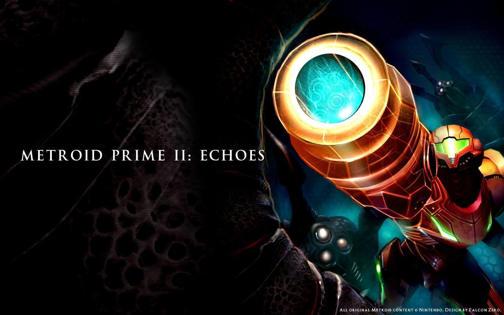
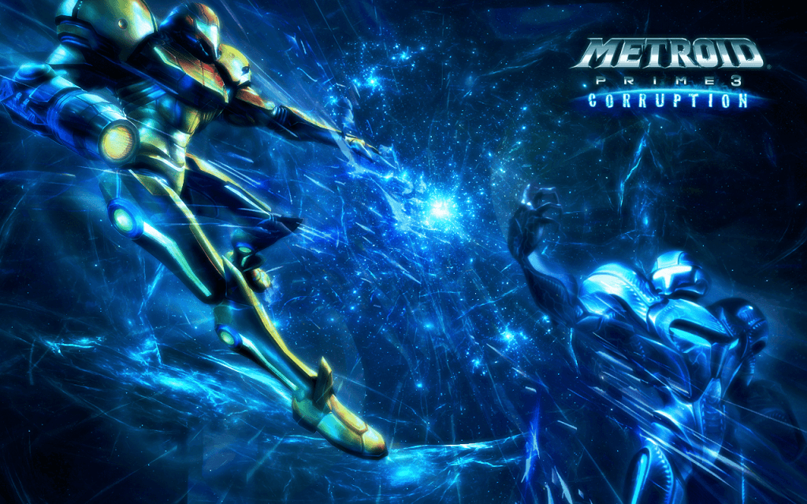
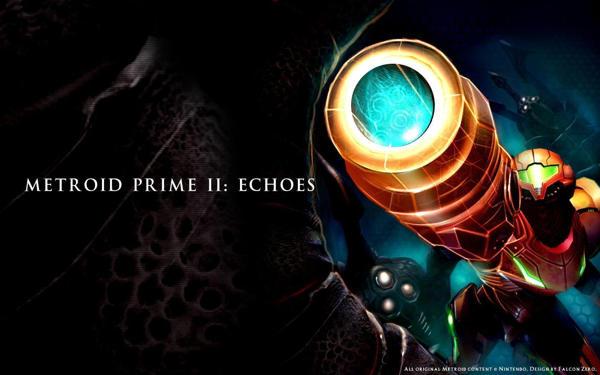
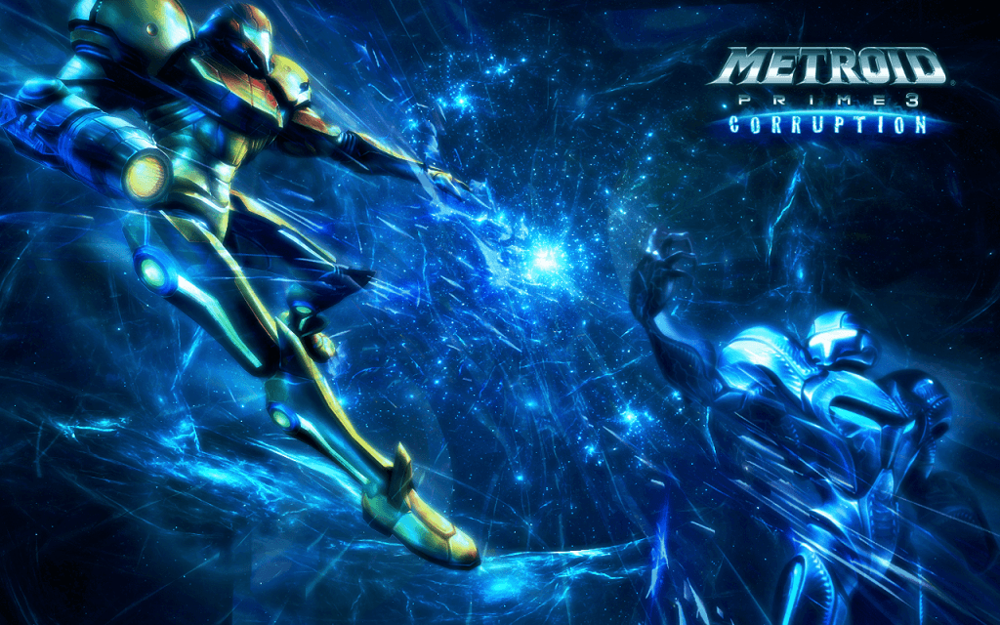
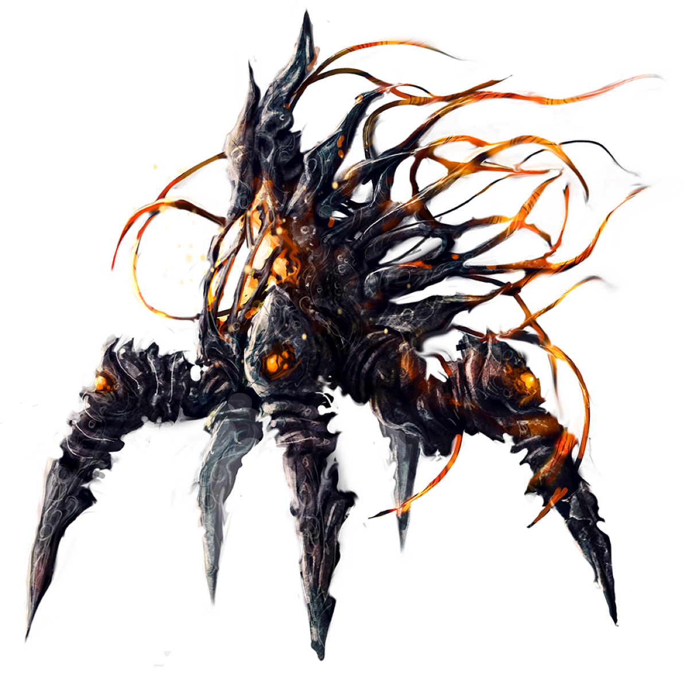

METROID SITE
Welcome to the ultimate Metroid hub! Whether you're a longtime fan or new to the franchise, this is your one-stop destination for all things Metroid. Dive deep into the rich storylines of each game, explore detailed creature databases, stay up to date with the latest news, and uncover a wealth of other exclusive features. Embark on your own intergalactic adventure here!
Dive into the Game Database
 



Explore the Metroid Beastiary
Uncover the dark creatures of the Metroid universe. From deadly parasites to iconic bosses, dive into their origins, abilities, and roles in Samus' adventures. Learn about the terrifying lifeforms that shape the galaxy's dangers.
The Metroid Gallery
Discover the stunning worlds of *Metroid* in our gallery! Explore iconic locations like Zebes and Tallon IV, with detailed descriptions highlighting the history and atmosphere of each unique setting.